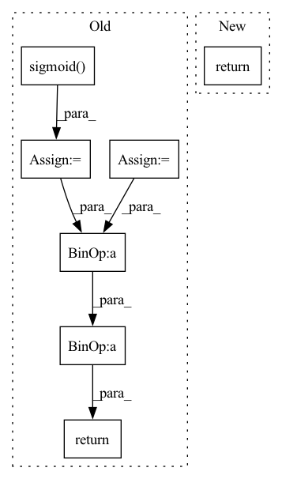

Pattern ID :1948

Before Change
// Read gate of the GRU.
read_gate_conv = layers.SNConv2D(num_channels, self._kernel_size, sn_eps=self._sn_eps)
read_gate = F.sigmoid(read_gate_conv(xh))
// Update gate of the GRU.
update_gate_conv = layers.SNConv2D(num_channels, self._kernel_size, sn_eps=self._sn_eps)
update_gate = F.sigmoid(update_gate_conv(xh))
// Gate the inputs.
gated_input = torch.cat([x, read_gate * prev_state], dim=1)
// Gate the cell and state / outputs.
output_conv = layers.SNConv2D(num_channels, self._kernel_size, sn_eps=self._sn_eps)
c = F.relu(output_conv(gated_input))
out = update_gate * prev_state + (1.0 - update_gate) * c
new_state = out
return out, new_state
After Change
outputs.append(output)
// Stack outputs to return as tensor
outputs = torch.stack(outputs, dim=0)
return outputs
In pattern: SUPERPATTERN
Frequency: 3
Non-data size: 7
Instances
Fragment ID: 8649730
Project Name: openclimatefix/skillful_nowcasting
Commit Name: b080785f5f559396d0b7e1a52d1c6d9a948d9439
Time: 2021-11-08
Author: jacob@bieker.tech
File Name: nowcasting_gan/layers/ConvGRU.py
M Class Name: ConvGRU
N Class Name: ConvGRU
M Method Name: forward(3)
N Method Name: forward(3)
M Parent Class: torch.nn.Module
N Parent Class: torch.nn.Module
M File Name: nowcasting_gan/layers/ConvGRU.py
N File Name: nowcasting_gan/layers/ConvGRU.py
M Start Line: 19
M End Line: 51
N Start Line: 70
N End Line: 78
'>
Before Change
def activate_grad(inp: jnp.ndarray) -> jnp.ndarray:
gate = lax.tanh(softplus(inp))
sigmoid = jax.nn.sigmoid(inp)
return (1 - sigmoid) * gate + sigmoid * (inp + gate - gate ** 2 * inp)
def activate(ctx: Context, inp: jnp.ndarray) -> jnp.ndarray:
After Change
def activate_grad(inp: jnp.ndarray) -> jnp.ndarray:
return jnp.where(inp < 0, 0.01, 1)
def activate(ctx: Context, inp: jnp.ndarray) -> jnp.ndarray:
'>
Fragment ID: 8649744
Project Name: homebrewnlp/homebrewnlp-jax
Commit Name: 3b85d5a95e15aae8898f2ce9fd9be106047444cd
Time: 2022-08-24
Author: 39779310+ClashLuke@users.noreply.github.com
File Name: src/model/activate.py
M Class Name: AnonimousClass
N Class Name: AnonimousClass
M Method Name: activate_grad(1)
N Method Name: activate_grad(1)
M Parent Class:
N Parent Class:
M File Name: src/model/activate.py
N File Name: src/model/activate.py
M Start Line: 16
M End Line: 18
N Start Line: 12
N End Line: 12
'>
Before Change
def forward(self, x):
x_dilated = self.conv_dilation(causal_pad(x, 2, self.dilation))
x_filter = torch.tanh(self.conv_tanh(x_dilated))
x_gate = torch.sigmoid(self.conv_sig(x_dilated))
x_h = x_gate * x_filter
skip = self.conv_skip(x_h)
return x_h + x_dilated, skip
class WaveNetBackbone(torch.nn.Module):
After Change
def forward(self, x):
x_dilated = self.conv_dilation(causal_pad(x, 2, self.dilation))
return self._forward_dilated(x_dilated)
def forward_fast(self, x):
Fast wave layer forward.
'>
Fragment ID: 8649719
Project Name: cheind/autoregressive
Commit Name: 96254a1bc1b89cc0530cb44cec1cbf8ae15fc010
Time: 2021-10-20
Author: cheind@profactor.at
File Name: autoregressive/wave.py
M Class Name: WaveNetLayer
N Class Name: WaveNetLayer
M Method Name: forward(2)
N Method Name: forward(2)
M Parent Class: torch.nn.Module
N Parent Class: torch.nn.Module
M File Name: autoregressive/wave.py
N File Name: autoregressive/wave.py
M Start Line: 53
M End Line: 58
N Start Line: 54
N End Line: 55